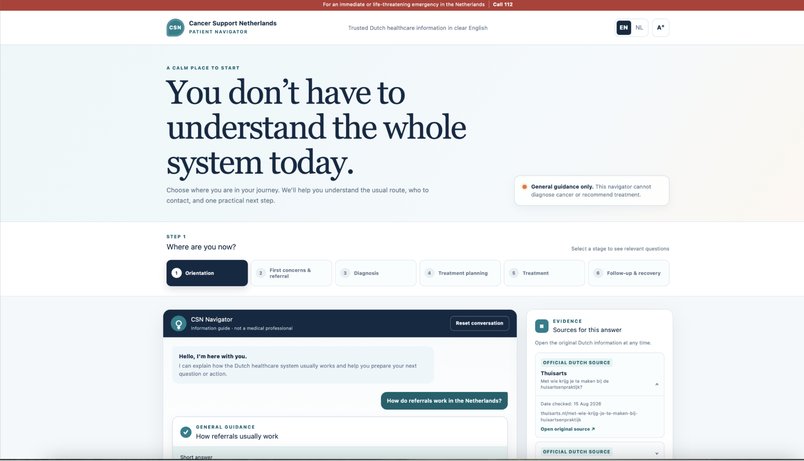

Building the data foundation for a future Patient Navigator that helps English-speaking cancer patients understand where they are in the Dutch healthcare journey, what they need to know and what to do next.
English-speaking cancer patients in the Netherlands can face a navigation problem rather than simply an information problem.
Reliable healthcare information is spread across multiple Dutch websites and organisations. Patients may need to understand GP referrals, specialist access, insurance, patient rights, treatment decisions and support services while also dealing with the uncertainty of a cancer diagnosis.
The project asked how Cancer Support Netherlands could transform this fragmented information landscape into a clearer, patient-centred navigation pathway.
How can CSN connect real patient questions to trusted healthcare information — and identify where patients are still being left without clear practical guidance?
Translated real patient needs into structured analytical questions and information requirements.
Supported collection, cleaning, translation and structuring of trusted Dutch healthcare information.
Used semantic embeddings to connect patient-language questions to source passages based on meaning rather than exact keywords.
Reviewed retrieved passages for relevance instead of relying on model similarity scores alone.
Converted validated search results into question, category and patient-journey coverage findings.
Translated analytical gaps into practical priorities and requirements for a future CSN Patient Navigator.
The knowledge base combined official, patient-facing and cancer-specific sources including Kanker.nl, Zorginstituut Nederland, Antoni van Leeuwenhoek, Zorgwijzer, Rijksoverheid, IKNL, Thuisarts and NFK. Source organisation, page title, URL and metadata were retained to preserve traceability.
Collect selected healthcare webpages.
Remove duplicates, labels and website noise.
Convert Dutch content into English.
Represent questions and passages numerically.
Retrieve the ten closest passages for each question.
Manually review whether each result helps the patient.
Convert validation results into coverage findings.
Patient wording and official healthcare terminology are often very different. Semantic search compares meaning rather than relying only on exact keyword matches.
A mathematically similar passage is not automatically a useful patient answer. Every retrieved result was therefore reviewed for practical relevance before being used in the coverage analysis.
Relevant passages received 1.0, partly relevant passages 0.5 and non-relevant passages 0. The average of the ten validated matches became the coverage score for each patient question.
Scores of 60 or above were treated as relatively well covered, 40–59.9 as partially covered, and below 40 as an information gap.
Insurance coverage, treatment decisions, second opinions, psychological care and appointments/tests were comparatively easier to match to useful trusted information.
English-speaking healthcare providers, fertility support, waiting times, nutrition and longer-term support emerged among the most poorly covered patient needs.
Patient rights and insurance were relatively better represented, while support-system, recovery and wider cancer-journey questions showed weaker coverage.
Coverage was not consistent from first concern through treatment and aftercare, showing why a Navigator should be journey-aware rather than operate as a static list of links.
Coverage measures information found in this project's knowledge base. It does not measure the quality or availability of healthcare services themselves.
Partial coverage suggests patients need clearer guidance around entry points, GP referrals and what happens next.
The strongest stage in the analysis, with comparatively better access to information around treatment choices and formal care.
Coverage falls again as patients encounter practical questions around support while living through treatment.
Longer-term recovery, rehabilitation and practical support remain fragmented.
The analytical findings were translated into a clickable Patient Navigator prototype showing how CSN could organise trusted information around the patient's journey and practical questions.

Concept prototype illustrating journey-stage navigation, plain-English guidance and practical next steps. The prototype demonstrates information structure and user experience rather than a production medical chatbot.
Prioritise English-speaking providers, waiting-time navigation, fertility support, nutrition and longer-term recovery — the areas where the analysis showed the largest information gaps.
Explain the practical sequence from GP to referral to hospital, including what happens next and where patients can seek help when waiting becomes a problem.
Instead of long source lists, allow patients to first identify where they are in the journey and then navigate rights, insurance, contacts, practical support and recovery relevant to that stage.
Include specialty, hospital or location, referral requirements and language information while linking patients to insurer or provider systems for details that change over time.
Create pathways for questions such as fertility, nutrition, mental health, physiotherapy, work, transport and family support — with a focus on who to ask and what action to take next.
Bring rehabilitation, fatigue, returning to work, psychological support, late effects and peer support into one clearer aftercare journey.
Refresh the knowledge base as healthcare sources, insurance rules and patient needs change rather than treating the dataset as a one-time deliverable.
The project created a traceable English-language data foundation for a future Patient Navigator and identified exactly where the current knowledge base is strongest and weakest.
It also converted those gaps into functional product requirements: journey-stage navigation, plain-English answers, practical next steps, trusted-source links and clearer support around underserved patient needs.
A clickable stakeholder prototype was developed to demonstrate how these requirements could translate into a future patient experience.